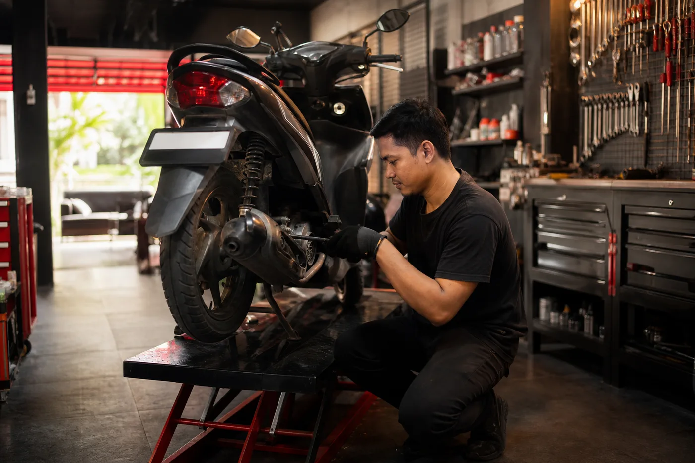
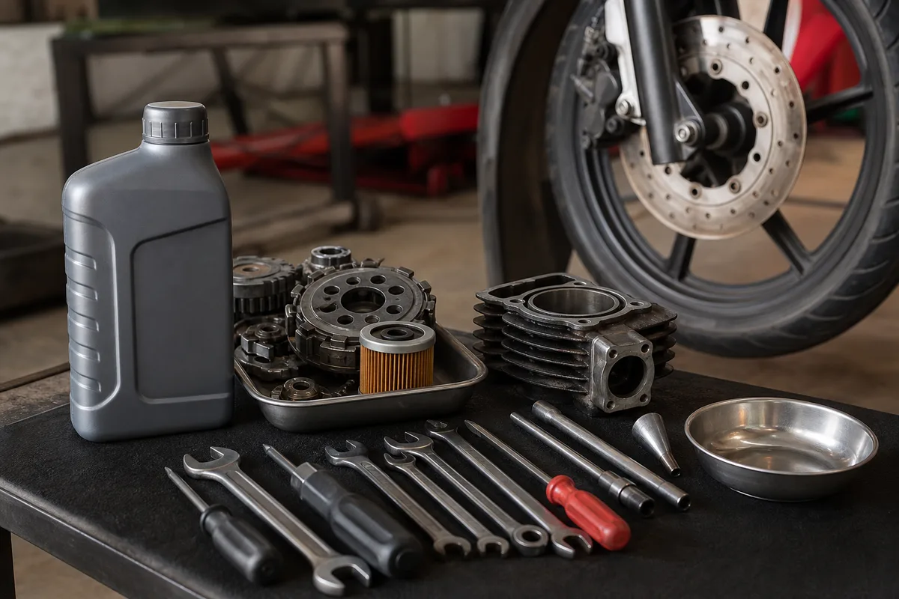

Servis ringan
Pembersihan area penting, pengecekan busi, filter, rem, tekanan ban, dan keluhan harian.
Bengkel motor • servis ringan • ganti oli
Garasi Roda Prima membantu pemilik motor harian untuk servis berkala, ganti oli, tune up ringan, cek rem, dan konsultasi keluhan tanpa antre panjang.

Layanan bengkel
Pembersihan area penting, pengecekan busi, filter, rem, tekanan ban, dan keluhan harian.
Pilihan oli sesuai motor, cek kilometer, dan reminder servis berikutnya.
Untuk motor yang mulai berat, boros, suara kasar, atau pengereman kurang pakem.
Paket populer
Cek Ringan
Servis Harian
Ganti Oli

Untuk bengkel lokal
Cara booking
Ceritakan tipe motor, kilometer, dan gejala yang dirasakan.
Bengkel konfirmasi slot agar pelanggan tidak menunggu terlalu lama.
Mekanik memberi estimasi awal sebelum pengerjaan tambahan.
Pelanggan dapat catatan servis dan rekomendasi perawatan berikutnya.
“Booking dulu lewat WA, datang tinggal servis. Mekaniknya jelasin masalah motor dengan bahasa yang gampang dimengerti.”
— Dimas, pelanggan motor harianArea demo: Bekasi dan sekitarnya. Nama bengkel, foto, nomor, dan harga masih dummy untuk contoh portfolio.
Motor mulai nggak enak?
Ini demo website bengkel motor buatan Infiraft. Cocok jadi contoh untuk jasa lokal yang ingin terlihat lebih dipercaya online.
Booking servis motor